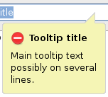
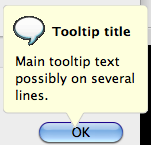

| Version: 2.9.4 |
#include </home/zeitlin/src/wx/github/interface/wx/richtooltip.h>
Allows to show a tool tip with more customizations than wxToolTip.
Using this class is very simple, to give a standard warning for a password text control if the password was entered correctly you could simply do:
wxTextCtrl* password = new wxTextCtrl(..., wxTE_PASSWORD); ... wxRichToolTip tip("Caps Lock is on", "You might have made an error in your password\n" "entry because Caps Lock is turned on.\n" "\n" "Press Caps Lock key to turn it off."); tip.SetIcon(wxICON_WARNING); tip.ShowFor(password);
Currently this class has generic implementation that can be used with any window and implements all the functionality but doesn't exactly match the appearance of the native tooltips (even though it makes some efforts to use the style most appropriate for the current platform) and a native MSW version which can be only used with text controls and doesn't provide as much in the way of customization. Because of this, it's inadvisable to customize the tooltips unnecessarily as doing this turns off auto-detection of the native style in the generic version and may prevent the native MSW version from being used at all.
Notice that this class is not derived from wxWindow and hence doesn't represent a window, even if its ShowFor() method does create one internally to show the tooltip.
The images below show some examples of rich tooltips on different platforms, with various customizations applied.
 |  |  |
| wxMSW appearance | wxGTK appearance | wxMac appearance |
Public Member Functions | |
| wxRichToolTip (const wxString &title, const wxString &message) | |
| Constructor must specify the tooltip title and main message. | |
| void | SetBackgroundColour (const wxColour &col, const wxColour &colEnd=wxColour()) |
| Set the background colour. | |
| void | SetTimeout (unsigned milliseconds) |
| Set timeout after which the tooltip should disappear, in milliseconds. | |
| void | SetTipKind (wxTipKind tipKind) |
| Choose the tip kind, possibly none. | |
| void | SetTitleFont (const wxFont &font) |
| Set the title text font. | |
| void | ShowFor (wxWindow *win) |
| Show the tooltip for the given window. | |
| ~wxRichToolTip () | |
| Destructor. | |
| void | SetIcon (int icon=wxICON_INFORMATION) |
| Set the small icon to show. | |
| void | SetIcon (const wxIcon &icon) |
| Set the small icon to show. | |
Constructor must specify the tooltip title and main message.
The main message can contain embedded new lines. Both the title and message must be non-empty.
Additional attributes can be set later.
| wxRichToolTip::~wxRichToolTip | ( | ) |
Destructor.
Notice that destroying this object does not hide the tooltip if it's currently shown, it will be hidden and destroyed when the user dismisses it or the timeout expires.
The destructor is non-virtual as this class is not supposed to be derived from.
| void wxRichToolTip::SetBackgroundColour | ( | const wxColour & | col, |
| const wxColour & | colEnd = wxColour() |
||
| ) |
Set the background colour.
If two colours are specified, the background is drawn using a gradient from top to bottom, otherwise a single solid colour is used.
By default the colour or colours most appropriate for the current platform are used. If a colour is explicitly set, native MSW version won't be used as it doesn't support setting the colour.
| void wxRichToolTip::SetIcon | ( | int | icon = wxICON_INFORMATION | ) |
Set the small icon to show.
The icon can be either one of the standard information/warning/error ones, i.e. wxICON_INFORMATION, wxICON_WARNING or wxICON_ERROR respectively (the question icon doesn't make sense for a tooltip so wxICON_QUESTION can't be used here) or a custom icon. The latter is unsupported by the native MSW implementation of this class so the use of a standard icon is preferred.
| void wxRichToolTip::SetIcon | ( | const wxIcon & | icon | ) |
Set the small icon to show.
The icon can be either one of the standard information/warning/error ones, i.e. wxICON_INFORMATION, wxICON_WARNING or wxICON_ERROR respectively (the question icon doesn't make sense for a tooltip so wxICON_QUESTION can't be used here) or a custom icon. The latter is unsupported by the native MSW implementation of this class so the use of a standard icon is preferred.
| void wxRichToolTip::SetTimeout | ( | unsigned | milliseconds | ) |
Set timeout after which the tooltip should disappear, in milliseconds.
By default the tooltip is hidden after system-dependent interval of time elapses but this method can be used to change this or also disable hiding the tooltip automatically entirely by passing 0 in this parameter (but doing this will prevent the native MSW version from being used).
Notice that the tooltip will always be hidden if the user presses a key or clicks a mouse button.
| void wxRichToolTip::SetTipKind | ( | wxTipKind | tipKind | ) |
Choose the tip kind, possibly none.
See wxTipKind documentation for the possible choices here.
By default the tip is positioned automatically, as if wxTipKind_Auto was used. Native MSW implementation doesn't support setting the tip kind explicitly and won't be used if this method is called with any value other than wxTipKind_Auto.
Notice that using non automatic tooltip kind may result in the tooltip being positioned partially off screen and it's the callers responsibility to ensure that this doesn't happen in this case.
| void wxRichToolTip::SetTitleFont | ( | const wxFont & | font | ) |
Set the title text font.
By default it's emphasized using the font style or colour appropriate for the current platform. Calling this method prevents the native MSW implementation from being used as it doesn't support changing the font.
| void wxRichToolTip::ShowFor | ( | wxWindow * | win | ) |
Show the tooltip for the given window.
The tooltip tip points to the (middle of the) specified window which must be non-NULL.
Currently the native MSW implementation is used only if win is a wxTextCtrl. This limitation may be removed in the future.